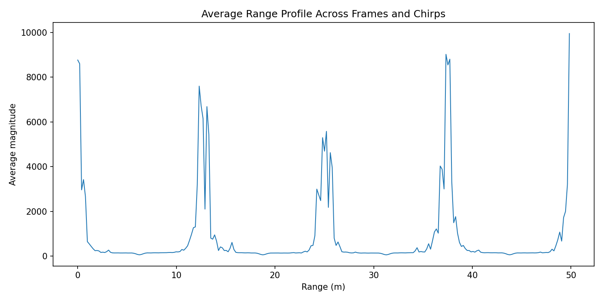

实测结果分析¶
现有采集数据已由原 Python 程序生成 13 张诊断图。采集配置和目标参考值尚未完整归档，当前检查主要针对数据排列、通道处理和坐标换算。
数据与程序¶
按代码中的每帧样本数，文件大小对应 100 帧；Python 能得到 [100,12,128,256] 数组，并完成后续计算。原始文件与历史中间结果的指纹保存在来源页，可用于判断文件是否被修改。
这些检查说明数据量和程序执行情况。实际采集是否用了这些 TX/RX 配置、通道怎样排列，还需要采集记录或已知目标实验。
四个直接影响结果的问题¶
在检查下面的重排之前，还要先核实 I/Q 配对。TI 的标准 xWR14xx 四 lane 示例是“四 I、四 Q”，项目的两种候选都沿用“两 I、两 Q”。因此旧候选比较只覆盖了一部分格式假设，不能直接选得分高者作为 IWR1443 的正确解析。两种格式和代码见数据解析。
| 位置 | 发生了什么 | 对结果的影响 |
|---|---|---|
| 数据重排 | 教程排列的距离谱约每 64 格重复；快时间连续性也较差 | 应先检查采样点与通道是否混排，后续 FFT 无法修复这个问题 |
| Doppler | :cfg.rx 只计算前 4 个通道 |
角度输入中的后 4 个通道为零 |
| 时间间隔 | 速度轴与跨帧时刻使用 Tc=160 µs |
如果实际为标准三路轮发，同一通道应使用 480 µs，速度尺度差 3 倍 |
| 跨帧频谱 | 在未采样的帧间空隙插入大量复数点 | 插值形成的谱结构可能被误认为真实运动 |
更换数据排列能否解决全部问题¶
更换排列只能处理“数值属于哪个时刻、哪个通道”的问题，不能补算遗漏的 Doppler 通道，也不会自动修正时间间隔和阵列坐标。TDM 候选排列在已有检查中更连续、综合分数更高，值得优先与采集配置和已知距离目标对照；确认排列后，仍需分别处理通道遗漏、时间尺度、阵列校准、目标选择和跨帧分析。
当前主程序没有根据候选分数切换解析器，历史图片仍来自教程排列。修改报告里的名称不会改变实际计算结果。
角度图和微位移曲线怎样使用¶
角度图的横轴还是空间 FFT 格。将格编号换成方向，需要知道通道的实际位置，并校正通道误差及 TDM 运动相位；这些步骤尚未验证。因此当前图能用于观察代码产生的谱峰，图上位置暂不能作为已标定的方位角。
第 30 个距离格的回波幅度很弱，通道间相干性也低。解缠相位换算出的几十毫米变化可能受噪声主导，缺少真实位移参照。微位移测量说明了相位换算的条件。

写实验记录时怎样表述¶
可以写：
当前使用教程兼容的数据排列，距离谱出现约 64 格的周期重复。另一种 TDM 排列在连续性检查中表现更好，但缺少完整采集配置和已知目标标定，暂未将它作为正式测量依据。
若要写出具体距离、速度、角度或位移，应同时记录采用的数据排列、采样时序、校准方法、参考值和误差。下一步按验证路线逐项检查。